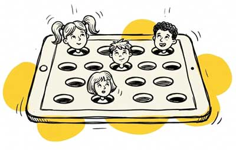
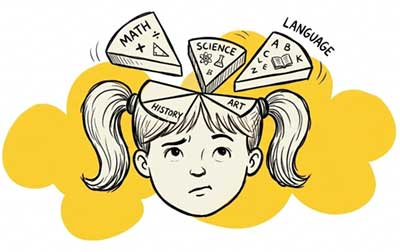
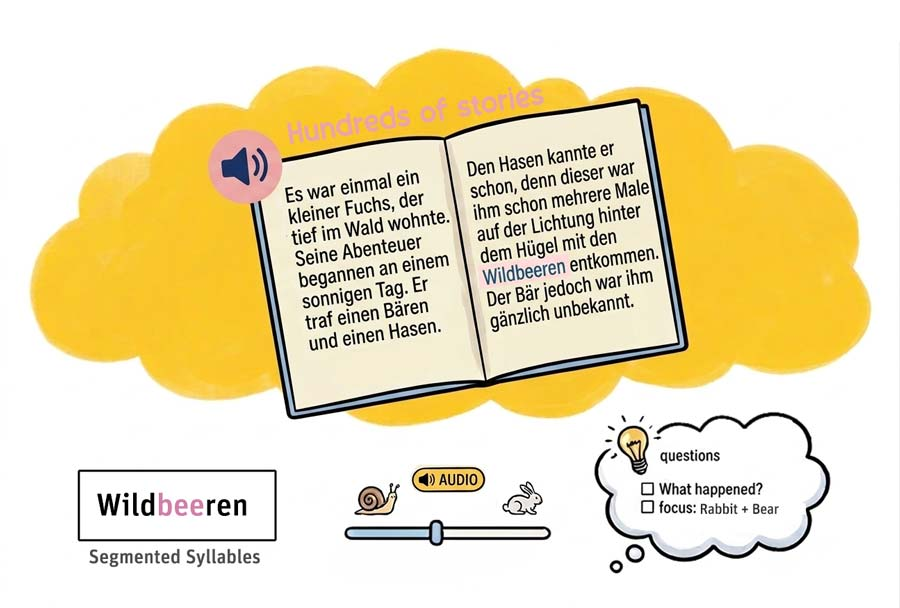

Kinder verbessern ihr Deutsch mit Stories, Spielen & Quizzen
Ideal für mehrsprachige Kids: Packende Geschichten, interaktive Quizze, die sich den Fähigkeiten anpassen, und Aussprache-Training machen das Sprachenlernen zum Kinderspiel.

Lesen: Der Skill fürs Leben! Wer hier hinkt, hats überall schwer. Unser Sprach+Leselern-App füllt die Lücke, die Schulen alleine nicht stemmen können.

08/15-Apps passen sich nicht an dein Kind an
Jedes Kind lernt anders. Trotzdem behandeln die meisten Apps alle gleich.
Lesekompetenz hängt von Zeit & Fähigkeiten der Eltern ab.
Wenn Eltern nicht vorlesen können, fehlen Kindern oft Wortschatz und Textverständnis.

Textverständnis + Aussprache gehören zusammen
Lesen üben ohne Blick auf Kontext und Bedeutung verpufft meist wirkungslos.
Gleiche Bildungschancen für jedes Kind...
Lesen, Wortschatz & Aussprache-Lernen direkt mit der Geschichte verknüpft
Verständnis ist der Schlüssel zum effektiven Lernen. Kinder hören Geschichten an und trainieren danach direkt im Lesefluss Textverständnis, Rechtschreibung oder Aussprache durch kleine Übungen.
Stressfrei Deutsch lernen
Perfekt abgestimmt auf jedes Lerntempo und alle Fähigkeiten.
Wortschatz-Training – basierend auf den Geschichten, die dein Kind gerade gelesen hat
Empfehlungen von Vorlese-Geschichten, die zu Alter & Interessen passen
1-Klick-Übersetzung für unbekannte Wörter
Hilfreiches, direktes Feedback zu Sprache & Aussprache
Geschichten & Verständnisübungen gehen Hand in Hand
Maßgeschneiderte Geschichten
...werden auf Alter & Textverständnis des Kindes abgestimmt. Lernen nicht zu schwierig, nicht zu einfach!
Dynamische Wortschatzübungen
Vokabeltraining orientiert sich flexibel an Wortschatz, Verständnis und nutzt Wörter aus vorher gelesenen Stories.
1-Klick-Übersetzung & Erklärungen
Kinder können unbekannte Wörter erklären oder übersetzen. Ein Klick/Tap genügt. Super-Easy.
Sprache & Aussprache üben
Kinder üben ihre Aussprache kinderleicht. Fehler werden im Wort angezeigt, so dass Kids wissen, was sie besser sprechen müssen.
Schluss mit dem Frust beim Sprachenlernen
Smartmeister kombiniert farbige Textmarkierungen beim Vorlesen mit visueller Silbentrennung, kinderleichter Wortübersetzung, anpassbarer Vorlesegeschwindigkeit und gezielten Fragen zum Textverständnis – für Sprachkompetenz, die wirklich sitzt.

Eingebaute Hilfestellungen, mit denen Kids Hürden ganz allein meistern!
Ein Schwierigkeitsgrad, der sich einfach goldrichtig anfühlt
Die verschiedenen Übungen zu Wortschatz, Aussprache oder Grammatik passen sich dem Verständnis und den Fähigkeiten deines Kindes an. So bauen wir das Sprachfundament Stein für Stein auf.
Video-Bereich: Übungen
Barrierefreies Lernen für alle
Wir senken Hürden, damit effektives Lernen für jedes Kind klappt.
Schriftart bei Lese-Rechtschreib-Schwäche (LRS)
Spezielle Layouts helfen dem Auge, in der Zeile zu bleiben, und erleichtern das Erkennen von Buchstaben.
Durchdachte Wiederholungen
Kinder können Sätze markieren, die sie nicht verstehen, um ganz unkompliziert eine einfachere Erklärung zu bekommen.
Modus für Einfache Sprache
Verschachtelte, komplexe Sätze lassen sich per Klick in eine leicht verständliche, stressfreie Satzstruktur umwandeln.
Perfekt für alle Lerntypen, ganz besonders für...

Kinder, die in mehreren Sprachen „zu Hause“ sind
Kleine Sprachexperten mit Deutsch als Zweitsprache (DaZ)
Kids, die im eigenen Tempo ihre Stimme und ihr Selbstvertrauen finden
Nachweislich mehr Deutsch-Kompetenz für zu Hause
+20%
Besseres Textverständnis
Kinder, die regelmäßig Lesen und Wortschatz trainieren, schneiden bei Tests zum Textverständnis um 20 % besser ab als Kids, die den klassischen Weg gehen.
Warum wir bewusst auf Reizüberflutung verzichten
Smartmeister nutzt keine übermäßig animierten Bilder in den Geschichten. Warum? Zu viele Animationen verleiten Kinder dazu, nur wie gebannt auf den Bildschirm zu schauen, statt den Text zu lesen. Dieser rein passive Konsum bewirkt beim Lernen genau das Gegenteil von dem, was wir wollen.